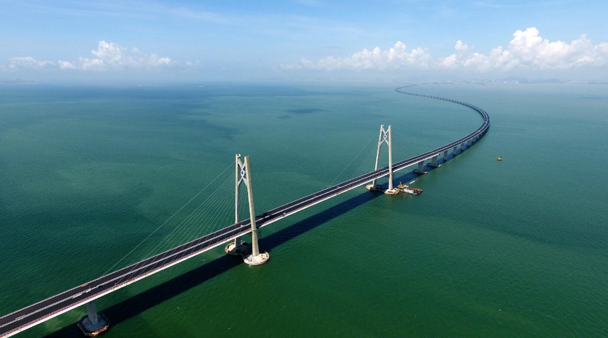
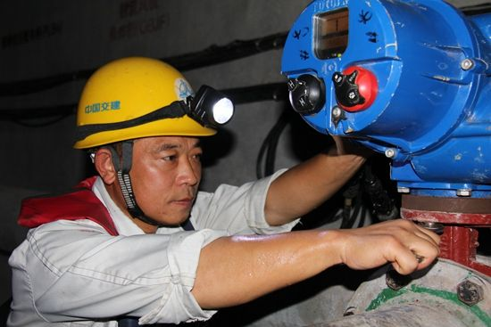

港珠澳大桥是迄今为止世界上施工难度最大的跨海大桥，被英国《卫报》评为“新世界七大奇迹”，工程中最大的挑战就是在茫茫大海中央修建一条5.6公里的海底隧道，长度、规模、施工工艺都是我国首次尝试。2017年7月7日，港珠澳大桥主体工程全线贯通，总长55公里，是连接香港、珠海和澳门的超大型跨海通道，也是世界最长跨海大桥。贯通后，从香港到内地单程仅需30分钟。这座大桥的贯通离不开它背后默默付出的工人们。

管延安，中交港珠澳大桥岛隧工程Ⅴ工区航修队钳工，负责沉管舾装和管内压载水系统安装等相关作业。经他安装的沉管设备，已成功完成18次海底隧道对接任务，无一次出现问题。海底四十米，管延安挥汗如雨、默默耕耘，于细微处彰显真功夫，“工匠精神”蔚蓝依然，这是一种信仰，更是一种力量。
精益求精 毫米之间见“匠心”
2013年年初，管延安成为港珠澳大桥建设者中的一员，主要负责沉管安装中的舾装和管内压载水系统等相关作业。大桥海底隧道由33条沉管连接而成，每条沉管标准长度为180米，水平面积堪比10个篮球场之大，超级沉管在12米海底实现厘米级精确对接，在业内人士看来，难度系数丝毫不亚于“神九”与“天宫一号”的对接。。 管延安负责的设备中有一种叫截止阀，沉管对接时，它的作用是控制入水量，调节下沉速度，从而让两节隧道在深海中精准对接。“如果要在地面完成，只要拧紧螺丝就够了。但要在深海中完成两节隧道的精准对接，做好设备不渗水不漏水，安装接缝处的间隙必须小于一毫米，就只能靠手感来操作了。”管延安说。 1毫米的间隙无法用肉眼判断，管延安却通过一次次的拆卸和练习，凭着“手感”，创下了零缝隙的奇迹。就是为了找到这种“最佳感觉”，他拧螺丝几乎不戴手套，“隔着一层布，‘手感’就没了。”经过了数以万计的重复工作，管延安练就了左右手拧螺丝均能达到误差不超过1毫米的高精准水平。

敬业：重复出精彩
以追求极致的态度，不厌其烦地重复检查、重复练习，管延安快速准确地完成了看似微不足道但又举足轻重的工作。 “大家都叫我‘中国深海钳工第一人’。但是，只有我的徒弟们知道，我只是认认真真、仔仔细细、不厌其烦地从第一节沉管到最后第33节沉管，从拧过的第一颗螺丝到最后第60万颗螺丝，在每一件设备、每一颗螺丝安装完后，都坚持做到反复检查三至五遍才放心。”管延安说，海底隧道建设是造福成千上万人的大事，至少在我所负责的环节一定要精益求精。蝶阀安装前管延安对蝶阀和各个零部件要检查三遍。安装后，再检查三遍，最后还要调试检验。在指导新人时，他最常挂在嘴边的话是“再检查一遍”，严谨精细，一丝不苟，让他跻身于央视去年“五一”特别报道《大国工匠》的8名受访者之一。
管延安并非生来就是一个技术超群的钳工，之所以能够有今天这样的技术水平和工作能力，需要耐心，更需要时间，平时半个小时就能安装好的设备，变成了四五个小时才能完成，但管延安觉得，这些“笨功夫”下得值。
年近不惑仍求知若渴
在港珠澳大桥岛隧项目，他接触了许多新知识：在整平船“津平1”上，他跟厂家年轻技术员学习了碎石垫层铺设系统的机械原理和部件检修；在大型沉管安装船上，他与技术主办学习、探索专用锚机和变频器检修。为“抢”到最前面的位置，每天“课程”开始前，他总是第一个到达，边听还边向“老师”提出问题。年近不惑之年的他，依然像小学生般求知若渴。港珠澳大桥海底隧道24节沉管对接的顺利完成，是对管延安工作的肯定。后续沉管仍需要精心地安装好每一个设备，连接好每一条管线。而这些，管延安都准备好了。他热情饱满，不断进取，随时准备投入到他热爱每一项精细的工作中。从他身上，我们看到了工匠的身影，更体会到，一种无形的大美匠心。